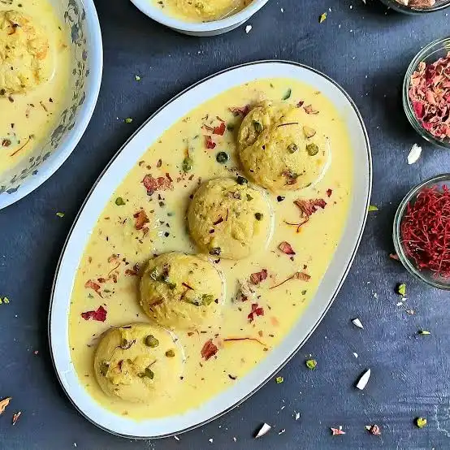

Rasmalai

Description
Rasmalai is a classic Indian dessert featuring soft, spongy paneer patties soaked in a rich, cardamom and saffron-flavored thickened milk. It requires just a few staple ingredients and relies on a delicate balance of kneading and soaking to achieve the perfect melt-in-the-mouth texture.
Ingredients
- Full-fat milk: 2 liter
- Lemon juice: 2 tbsp (or 3 tbsp white vinegar diluted in 2 tbsp water)
- Cornstarch (or corn flour): 1 tsp
- Water: 4 cups
- Sugar: 1 cup
- Sugar: 1/4 to 1/3 cup (adjust to taste)
- Saffron strands: a generous pinch
- Green cardamom powder: 1/2 tsp
- Chopped almonds and pistachios: 2 tbsp (for garnishing)
Steps for Prepration
- Prepare the Paneer (Chenna)
- Boil 1 litre of toned milk in a pan. Once it boils, turn off the heat and let it cool slightly for 2 minutes to prevent a rubbery texture.
- Add the lemon juice/vinegar mixture gradually, stirring slowly until the milk curdles completely and green whey separates.
- Line a colander with a clean cheesecloth or muslin cloth and pour the curdled milk through it.
- Rinse the collected chhena under cold tap water for 1–2 minutes to wash away any sour lemon or vinegar flavor.
- Squeeze out excess water gently. Tie the cloth and hang it over your sink tap for 30–45 minutes to drain completely.
- Knead and Shape
- Transfer the drained chhena onto a large plate. It should feel crumbly but slightly moist to the touch.
- Using the heel of your palm, mash and knead the chhena for 8–10 minutes until it turns into a smooth, crack-free dough that lightly greases your hands.
- Add 1 tsp of cornstarch and knead for another 2 minutes to bind the dough.
- Divide the dough into 12 small portions. Roll each into a smooth ball and flatten gently between your palms to form round patties. Ensure there are no cracks on the edges.
- Cook the Patties in Syrup
- In a wide, deep pan, combine 1.5 cups sugar and 5 cups water. Bring to a rolling boil over high heat.
- Gently slide the chhena patties into the boiling syrup one by one.
- Cover with a lid and cook on medium-high heat for 12–15 minutes. The patties will expand to double their original size.
- Turn off the heat and let the patties cool down completely inside the syrup pan at room temperature.
- Prepare the Rabri
- While the patties are cooling, boil 1 litre of full-fat milk in a separate heavy-bottomed pan.
- Lower the flame and simmer, stirring frequently and scraping down the malai (cream) from the sides of the pan back into the milk.
- Reduce the milk to about half its original quantity (takes about 15 minutes). Do not make it overly thick, or the patties won't absorb it later.
- Stir in the 1/2 cup sugar, saffron strands, cardamom powder, and half of the chopped nuts. Simmer for 3 more minutes until the sugar dissolves, then turn off the heat.
- Assemble and Chill
- Take the cooled chhena patties out of the sugar syrup. Gently press each patty between your flat palms or two spoons to squeeze out the excess syrup without breaking them.
- Drop the squeezed patties into the warm rabri milk.
- Let the mixture cool to room temperature, then transfer it to the refrigerator to chill for at least 4–5 hours (or overnight). This allows the discs to soak up the aromatic saffron milk perfectly.
- Garnish with the remaining pistachios and almonds before serving cold.
Home